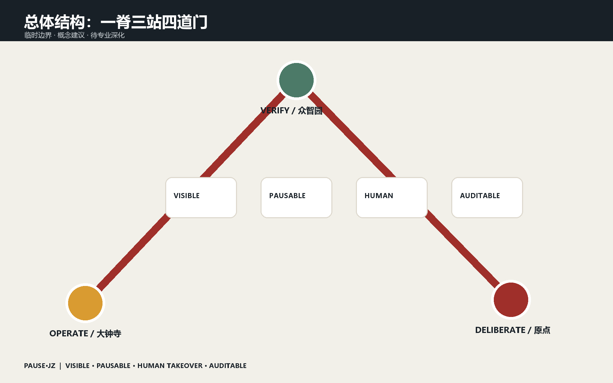
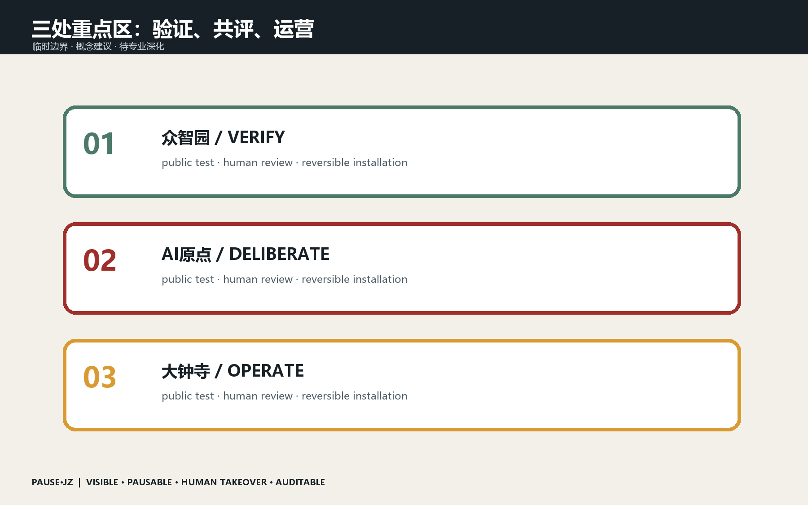

总览地图 · 三层范围 · 重点区域 · 用地分区 · 交通慢行 · 蓝绿公共空间 · 建筑 · 更新项目 · AI 场景 · 核心指标 · 任务覆盖 · 自检状态 · 来源 · 假设
可见 / VISIBLEAI运行状态与责任主体公开
可暂停 / PAUSABLE现场、线上和自动触发三种暂停
人工接管 / HUMAN明确响应时限与交接记录
可审计 / AUDITABLE版本、事件、申诉与修复留痕
ONE SPINE · THREE STATIONS · TWELVE SCENARIOS

11.41 km²12.34%7.33%All figures derive from provisional submission geometry and are not statutory planning controls.
THREE CIVIC STATIONS

SOURCES · ASSUMPTIONS · SELF-CHECK
Official announcement + public repository taskbook. Official polygons, regulatory controls, ownership, utilities and engineering conditions remain pending. This offline page makes no external request and contains no tracking.